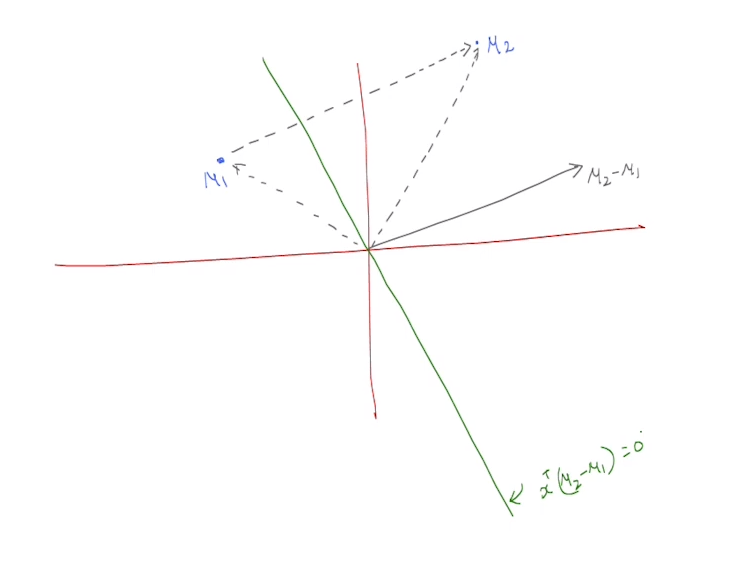
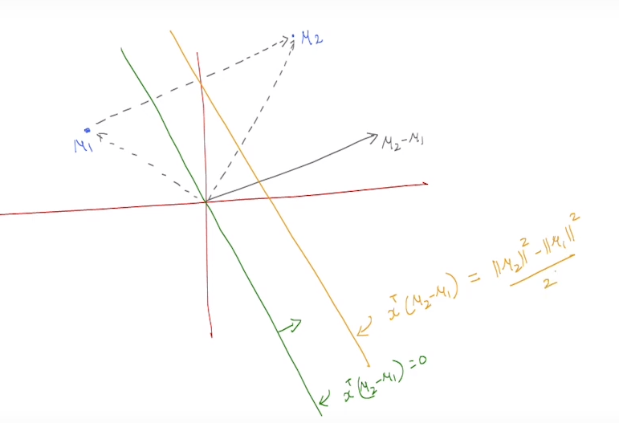
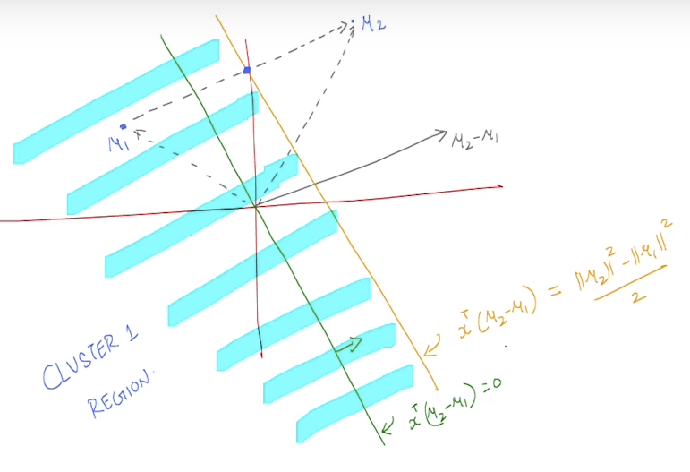

Clustering
Clustering is a technique in unsupervised machine learning that involves grouping similar data points together into clusters or groups based on some similarity or distance measure. The goal of clustering is to discover hidden patterns, structures, or natural groupings within a dataset without any prior knowledge of the groups or categories.
Problems with Clustering
The goal of this weak is to understand the information about datapoints which are clustered together.
If we were to cluster datapoints into \(k\) different clusters the total number of ways \(n\) datapoints can be clustered is \(k^n\) (this includes empty clusters).
For a set of datapoints from \(\{x_1 , x_2 , x_3 .... x_n \}\) and the cluster indicators from \(\{z_1 , z_2 , z_3 , .... z_n \}\) , we need to develop a metric to get an idea of how good the clusters are.
A common algorithm which can be used for this purpose is to measure the distance of the datapoints from the mean of their respective clusters and summing those values for each cluster individually , a lower value indicates that the points are closely packed within a cluster , while a higher value indicates that the points are spread apart.
This algorithm can formalized into a function as follows
where \(\mu_{z_i}\) is mean of each \(z_i^{th}\) cluster.
This way of clustering is considered an NP-Hard problem and its computationally intensive as there are total of \(k^n\) possible combinations of datapoints.
K-Means Algorithm
To solve the above problem of clustering we will take a look at K-Means Algorithm.
The first step is Initialization , where each cluster indicator is assigned a cluster between \(1\) to \(k\) for the \(0^{th}\) iteration.
Then until Convergence ,
We first compute the mean of each cluster for the \(t^{th}\) iteration.
The next step is reassignment of the datapoints,
This step compares every point's distance to the mean of every other cluster , if the distane to the mean is strictly less than the distance to mean of the current cluster then the datapoint is assigned to the next cluster.
Note
K-Means Algorithm does not always produce the optimal solution but usally produces reasonable clusters.
But what if the algorithm never actually converges?
The short answer is Yes , the algorithm does converge. But how?
Convergence of K-Means Algorithm
FACT 1
Let \(X_1 , X_2 , X_3 ..... X_l \in \mathbb{R}^d\)
Using differentitation to solve this problem
The actual proof of convergence of K-Means Algorithm starts here.
Lets assume that we are at iteration \(t\) of Lloyd's/K-Means Algorithm.
Then our current assignment of cluster indicators would look like
Here \(t\) corresponds to the iteration number and \(n\)/subscript corresponds to the data point.
Also , \(\mu_k^t\) is the mean for cluster \(k\) in the \(t^{\text{th}}\) (current) iteration.
Now lets assume the algorithm does not converge and see what happens. If it doesnt converge , then the cluster indicators would be reassigned.
After this reassignment we dont know for sure that this assignment of cluster indicators is better than the previous one , to solve this problem we will take a look at the "objective function".
Here we can see that we are in the \(t^{th}\) iteration in which every point is being measured in this experession to the mean of the box it is assigned to.
Basically , this experession captures the distances of each point to its own mean in the \(t^{\text{th}}\) iteration.
Here every point is measured to the mean of the cluster it wants to switch to.
Some points might have lesser distance to their current cluster than the new cluster mean, they want to switch to , in that case \(Z_i^{t+1}\) is the same as \(Z_i^t\).
While the other points might have distance closer to the new cluster mean than their current mean , in that case they jump to the new cluster and thats when the actual reassignment happens.
As our assumption above , if the algorithm does not converge then there must be some points who want to jump/switch to a new cluster mean which is closer to them.
This means that the sum of \((\ref{2})\) will be less than the sum of \((\ref{1})\).
Nature of Clusters
Now that we know that the algorithm converges , what can we say about the clusters formed using this algorithm
Lets understand this with an example where there are only 2 clusters. The means of the 2 clusters are \(\mu_1\) and \(\mu_2\).
By the algorithm's construction we know that every point is happy with their own mean , this also can be thought of as that every point that is assigned to cluster 1 is closer to \(\mu_1\) than it is to \(\mu_2\).
This can be expressed as,
This equation can further be changed into
Now how do we visualize this ? , what does this actually represent?

Here the black line is the difference between \(\mu_1\) and \(\mu_2\) and the green line perpendicular to the black one.

The yellow line is drawn from the middle point of \(\mu_2 - \mu_1\) parallel to the green line , this is the line that divides the plane into 2 regions for cluster 1 and cluster 2.

Initialization of Centroids, K-Means++
Initially we assigned the points to random boxes , but this is not the best way to assign the points.
In K-Means++ Algorithm we pick means of points which are as far apart as they can be.
-
It chooses first mean \(\mu_1^0\) uniformly at random from \(\{x_1 , x_2 , x_3 , .... , x_n \}\)
-
For \(l = 2 , 3 , .... k\) , (where \(l\) represents the \(l^{\text{th}}\) mean that we are going to pick) choose \(\mu_l^0\) probabilistically proportional to score. Here score is a positive number.